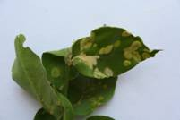

| Home |
| PEST OF JASMINE |
mAJOR pESTS |
| 1. Budworm |
| 2. Gallery worm |
| 3. Leaf webworm |
| 4. Jasmine eriophyid mite |
mINOR pESTS |
| 1. Jasmine leaf roller |
| 2. Redspider mite |
| 3. Jasmine bug |
| 4. Green plant hopper |
| Questions |
| Download Notes |
JASMINE :: MAJOR :: JASMINE ERIPHYID MITE
4. Jasmine eriophyid mite: Aceria jasmine (Eriophyidae: Acarina)
Distribution and status: India
Host range: Jasmine, Jatropha intergrima
Damage symptoms: Feeding causes felt-like hairy out growth (Erineum) on the surface of leaves, tender stem and flower buds. Makes web which look like felt and appear to be a white hairy growth on the leaf surface, tender stems and flower buds.
Bionomics: Female is cylindrical and vermiform with two pair of legs and measures about 150-160 µ long and 44 µ thick.
|  |
Management :
Grow resistant variety Parimullai (TNAU).
Spray triazophos 1.5 ml/L in combination with neem oil 5 ml/L twice or thrice or monocrotophos 1.0 L or wettable sulphur 40 WP 3.75 kg or dimethoate 30 EC 625 ml or malathion 50 EC 1.0 L in 500 -750 L of water/ha.